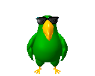
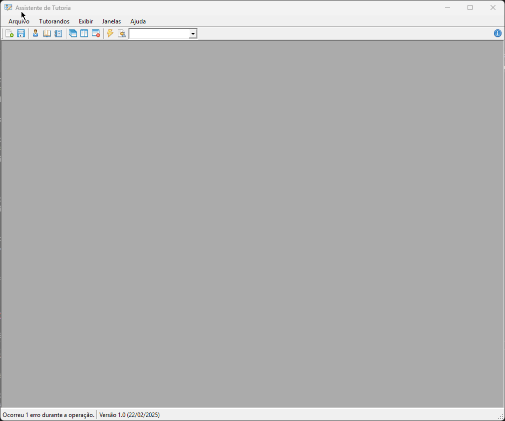
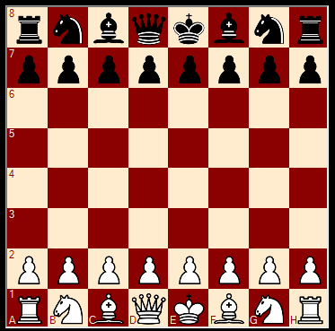
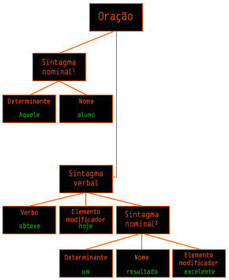

We stand now at the turning point of human history, a moment as significant as when our ancestors first ventured out of the ocean or took their first uncertain steps on land. For the first time, we have the power to determine the future of our species—not just on this planet, but beyond it. The progress of science and technology in the last century has been astonishing, and yet we are only at the very beginning of what is possible. Space travel is no longer a dream; it is an emerging reality. The Moon landing of 1969 was not the end of an era, but the beginning of a new one. The next logical step is the permanent settlement of space, the establishment of colonies beyond Earth. We must become a multi-planet species if we are to ensure our survival. At the same time, we are witnessing the rise of computers and artificial intelligence—machines that will not replace human intelligence, but amplify it. I foresee a world where knowledge is instantly accessible to anyone, where people can communicate across the globe without barriers of language or distance. The merging of human intelligence with machine intelligence will redefine what it means to be human. Yet with all these great promises, we must also be cautious. The same technologies that can elevate us to new heights can also bring destruction. We must use our knowledge wisely, always remembering that technology should serve humanity, not the other way around. The future is not something we enter; it is something we create. And as we stand on the threshold of the stars, we must choose wisely, for our destiny is in our hands.
Projetos
"Ela brilhou, pálida como a morte, / E eu ali, entregue à minha sorte. / Fiquei pensando como o mesmo luar / Que meu coração como a brisa tocou, / Era aquele que fazia brilhar / O recife, onde ela se espatifou."

TripleAgent エージェント挑発者
O TripleAgent é uma reimplementação standalone do agentsvr.exe.
O principal objetivo desse projeto era a portabilidade do serviço, focando em produzir uma biblioteca multiplataforma fidedígna à tecnologia original.
Assistente de tutoria 監視員
Esse programa foi feito para ajudar os professores a criarem resumos da performance dos seus tutorados.
O programa solicita as notas dos alunos pelo portal da SED e plota um resumo do aluno por área do conhecimento.


"Rodrigo" 電脳バカ
Rodrigo é um apelido carinhoso dado para a engine de xadrez "Sapienza" em homenagem ao ilustre enxadista do PJN.
A engine é bem básica e não tem nenhuma noção de segurança de rei ou estrutura de peões. Para mim, ainda é um projeto pendente. No futuro, pretendo reescrever ela em C++ e aprimorar alguns detalhes.
Projetos em andamento
"Deixem-me em paz! Não tardo, que eu nunca tardo... / E enquanto tarda o Abismo e o Silêncio quero estar sozinho!"
[ SEM IMAGEM ]
TalkAbout 声を出す
Síntese de voz sempre me encantou. A ideia de um computador simular a fala humana com todas as suas peculiaridades e características é fascinante.
Estou ainda na fase de pesquisa, mas o método que eu pretendo usar é o de síntese por formantes.
LInspector 解釈
O LInspector é um projeto que eu comecei mas coloquei na geladeira por conta da sua complexidade. O objetivo é criar uma biblioteca de análise sintática da língua portuguesa.

[ SEM IMAGEM ]
"Destephones" 聞き上手
Futuramente, será uma biblioteca de reconhecimento de voz baseado em regras.
Me interessei em criar minha própria biblioteca de reconhecimento de voz graças a falta de outras alternativas. A maioria dos serviços ou é via API ou não é de dicionário livre.
(minha criatividade para nomes se esgotou faz tempo)
Currupaco シミュレートする
O Currupaco é a culminância de tudo apresentado aqui.
Quando pronto, ele combinará o TripleAgent (como interface), o Destephones (para receber os comandos), o LInspector (para entender e formular frases) e o TalkAbout (para se comunicar com o usuário) com o objetivo de criar um assistente semi-inteligente, multiplataforma e carismático.